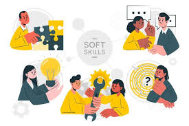

Soft skills

- Você sabe o que são Soft Skills?
- Soft Skills: dicas de como desenvolver habilidades comportamentais
- Soft Skills: O que são, Tipos Principais e Como Desenvolver
- As 10 soft skills mais procuradas pelas empresas
- Item 3 com marcador
- Item 4 com marcador
- Aprenda a usar o autoconhecimento para realçar suas soft skills e as de seus colaboradores para a sua empresa alcançar melhores resultados.
Uma expressão muito comum usada no ambiente organizacional, as soft skills representam a evolução do conceito de competência dentro do trabalho de gestão de pessoas. Neste artigo, vamos explicar o termo e te ajudar a desenvolver suas próprias competências e a do seu time, para garantir a prosperidade do seu negócio.
- Provavelmente você deve ter entre os amigos aquele que se relaciona melhor com os colegas na escola, ou o membro do grupo de trabalho que naturalmente assume a liderança na hora da execução das tarefas. Essas características são conhecidas como soft skills, termo em inglês usado para definir habilidades comportamentais.
- As soft skills são um conjunto de habilidades e competências relacionadas ao comportamento humano.
Dessa forma, são consideradas como características necessárias para que um profissional alcance os seus objetivos profissionais, aquilo que estabelece para a sua carreira.
- Habilidades socioemocionais valem para qualquer carreira e vão te ajudar a conquistar uma promoção, um cargo de gestão e melhores salários
Olhando para 10, 15 ou até 20 anos atrás, as habilidades mais técnicas eram as mais importantes para que um profissional progredisse na carreira. Mas agora, as atitudes dos empregadores em relação ao trabalho e os critérios de seleção de talentos mudaram. As soft skills são a nova moeda do local de trabalho.
- Essas são as 10 soft skills que não podem faltar a qualquer profissional:
- Dicas de como desenvolver habilidades comportamentais
- Capacidade de lidar bem com as próprias emoções